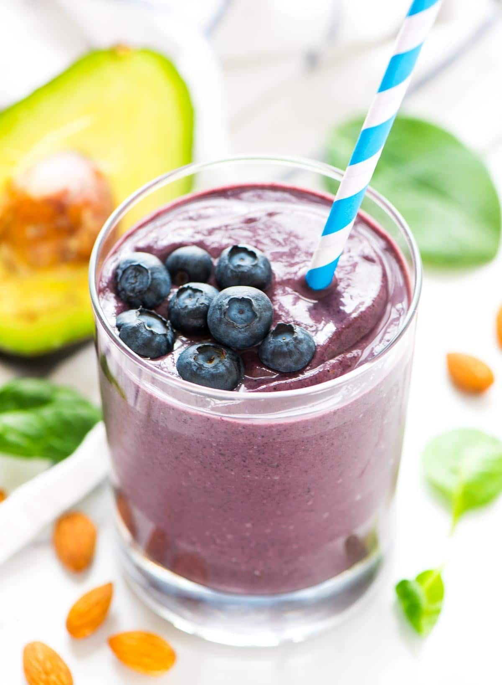

Blueberry, Bannana, Avacado Shake (Vegan)

Description
It's time for you to find your center again! This delecious shake will get you going in right the side of the bed and help you maintain your skin health.
Ingredients
1/2 cup unsweetened vanilla almond milk or milk of choice
1 medium ripe banana peeled
1/2 ripe avocado peeled and pitted
2 cups frozen blueberries
1 tablespoon ground flaxseed meal
1 tablespoon almond butter or whole almonds if you have a very high-powered blender that will ensure the mixture is smooth
Steps
- Place all the ingredients in your blender in the order listed: almond milk, spinach, banana, avocado, blueberries, flaxseed meal, and almond butter.
- Blend until smooth. If you'd like a thicker smoothie, add a small handful of ice. For a thinner smoothie, add a bit more almondmilk. Enjoy immediately.